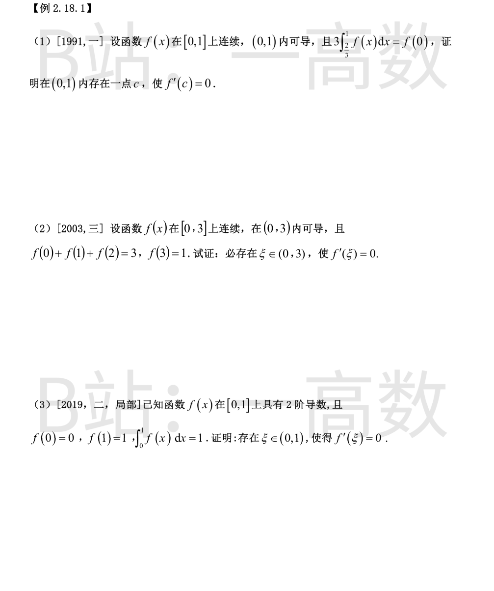
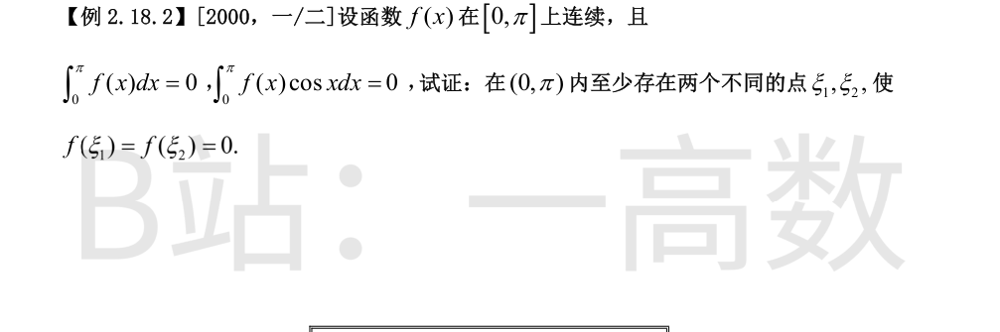
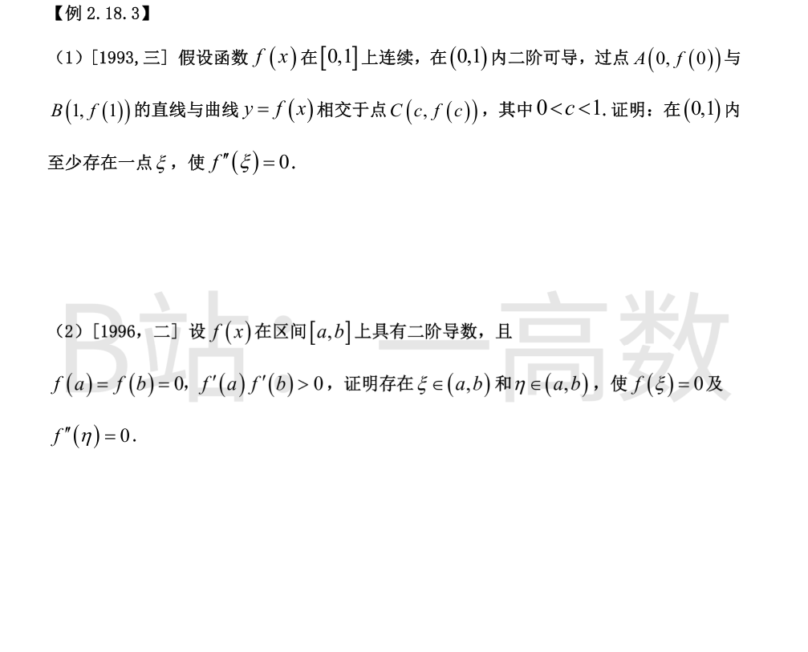
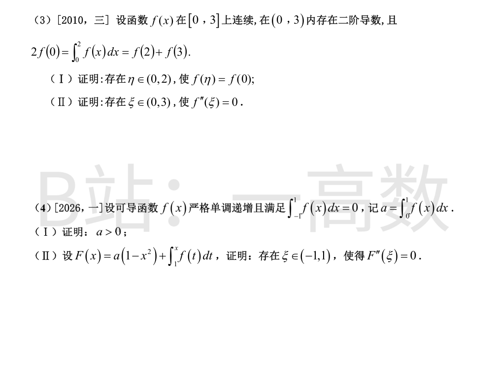
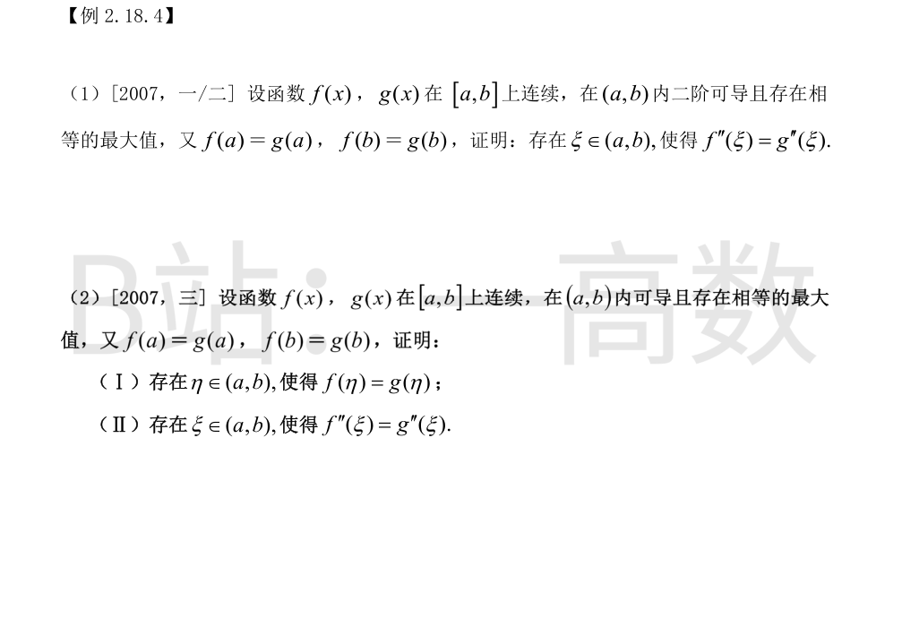
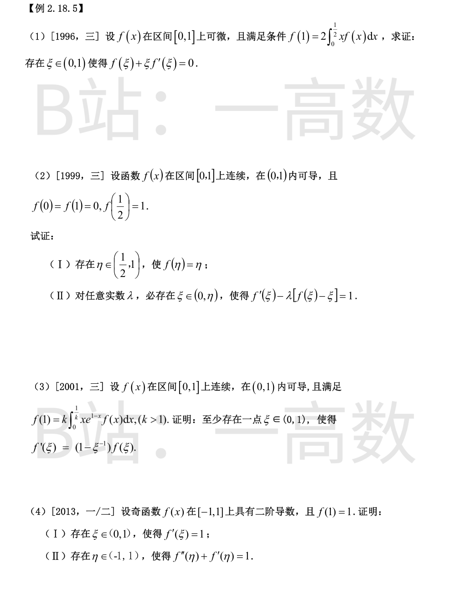
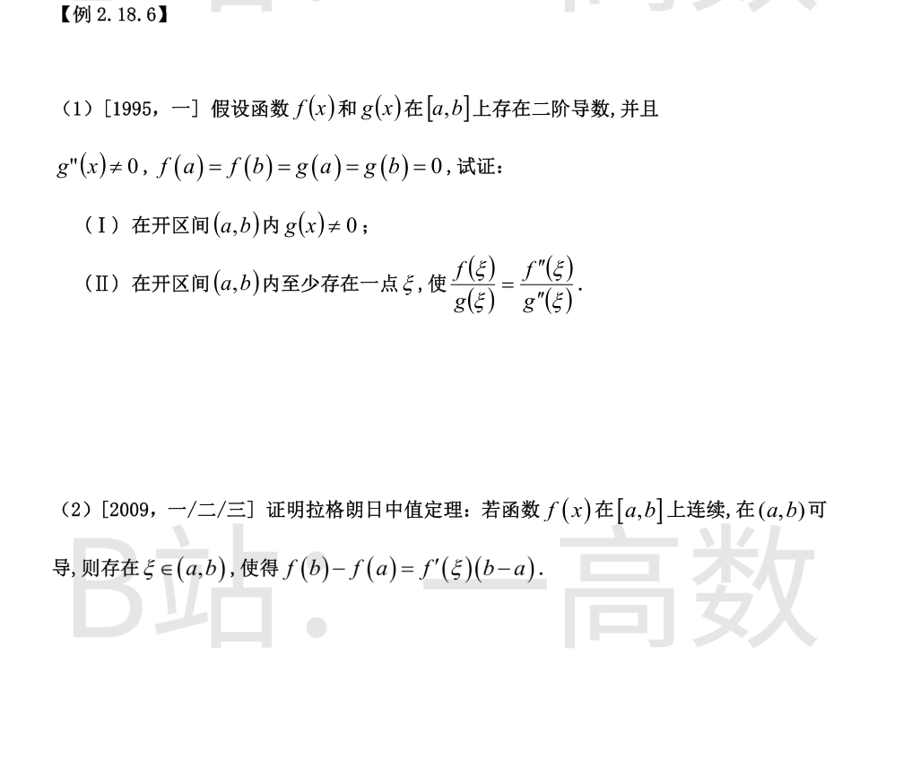

$f$ 在 $\left[\dfrac23,1\right]$ 上连续，由积分中值定理，存在 $\xi\in\left[\dfrac23,1\right]$ 使
$$\int_{2/3}^{1}f(x)\,dx=f(\xi)\left(1-\frac23\right)=\frac13 f(\xi).$$
结合条件 $3\displaystyle\int_{2/3}^{1}f(x)\,dx=f(0)$ 得 $f(\xi)=f(0)$，且 $\xi\ge\dfrac23>0$。
$f$ 在 $[0,\xi]$ 上连续、$(0,\xi)$ 内可导，$f(0)=f(\xi)$，由罗尔定理，存在 $c\in(0,\xi)\subset(0,1)$ 使 $f'(c)=0$。
$f$ 在 $[0,2]$ 上连续，设其最小值为 $m$、最大值为 $M$，则
$$m\le\frac{f(0)+f(1)+f(2)}{3}=1\le M.$$
由介值定理，存在 $x_0\in[0,2]$ 使 $f(x_0)=1$（若 $f(0),f(1),f(2)$ 中恰有等于 $1$ 者，直接取之为 $x_0$）。于是 $f(x_0)=f(3)=1$，且 $x_0\le2<3$。
$f$ 在 $[x_0,3]$ 上连续、$(x_0,3)$ 内可导，$f(x_0)=f(3)$，由罗尔定理，存在 $\xi\in(x_0,3)\subset(0,3)$ 使 $f'(\xi)=0$。
令 $F(x)=\displaystyle\int_0^x f(t)\,dt-x$，则 $F(0)=0$，$F(1)=\displaystyle\int_0^1 f(t)\,dt-1=1-1=0$。
$F$ 在 $[0,1]$ 上连续、$(0,1)$ 内可导，由罗尔定理，存在 $\eta\in(0,1)$ 使 $F'(\eta)=0$；而 $F'(x)=f(x)-1$，故 $f(\eta)=1=f(1)$。
$f$ 在 $[\eta,1]$ 上连续、$(\eta,1)$ 内可导，$f(\eta)=f(1)$，再由罗尔定理，存在 $\xi\in(\eta,1)\subset(0,1)$ 使 $f'(\xi)=0$。

**第一步：$f$ 在 $(0,\pi)$ 内必有零点。** 若 $f$ 在 $(0,\pi)$ 内无零点，由连续性知 $f$ 恒正或恒负，则 $\displaystyle\int_0^\pi f(x)\,dx\ne0$，与条件矛盾。
**第二步：反证零点唯一。** 设 $f$ 在 $(0,\pi)$ 内只有一个零点 $\xi_1$。由 $\displaystyle\int_0^\pi f(x)\,dx=0$ 知 $f$ 在 $(0,\xi_1)$ 与 $(\xi_1,\pi)$ 内必异号（若两边同正则积分大于零，同负则小于零），不妨设
$$f(x)>0,\ x\in(0,\xi_1);\qquad f(x)<0,\ x\in(\xi_1,\pi).$$
由 $\cos x$ 在 $(0,\pi)$ 上单调递减，$\cos x-\cos\xi_1$ 在 $(0,\xi_1)$ 内为正、在 $(\xi_1,\pi)$ 内为负，于是
$$f(x)\,(\cos x-\cos\xi_1)\ge 0,\qquad x\in(0,\pi),$$
且在 $(0,\pi)$ 的一些闭子区间上严格大于零，故 $\displaystyle\int_0^\pi f(x)(\cos x-\cos\xi_1)\,dx>0$。但另一方面
$$\int_0^{\pi}f(x)(\cos x-\cos\xi_1)\,dx=\int_0^{\pi}f(x)\cos x\,dx-\cos\xi_1\int_0^{\pi}f(x)\,dx=0-0=0,$$
矛盾。故 $f$ 在 $(0,\pi)$ 内至少有两个不同的零点 $\xi_1\ne\xi_2$，使 $f(\xi_1)=f(\xi_2)=0$。


$A,B,C$ 三点共线，故三个斜率相等：
$$\frac{f(c)-f(0)}{c-0}=\frac{f(1)-f(c)}{1-c}=\frac{f(1)-f(0)}{1-0}.$$
对 $f$ 在 $[0,c]$ 上用拉格朗日中值定理：存在 $\xi_1\in(0,c)$ 使 $f'(\xi_1)=\dfrac{f(c)-f(0)}{c}$；
对 $f$ 在 $[c,1]$ 上用拉格朗日中值定理：存在 $\xi_2\in(c,1)$ 使 $f'(\xi_2)=\dfrac{f(1)-f(c)}{1-c}$。
于是 $f'(\xi_1)=f'(\xi_2)$。$f'$ 在 $[\xi_1,\xi_2]$ 上连续、$(\xi_1,\xi_2)$ 内可导，由罗尔定理，存在 $\xi\in(\xi_1,\xi_2)\subset(0,1)$ 使 $f''(\xi)=0$。
**证 $f(\xi)=0$：** 不妨设 $f'(a)>0,\ f'(b)>0$（同为负时对 $-f$ 同理）。
$$\lim_{x\to a^+}\frac{f(x)-f(a)}{x-a}=f'(a)>0\ \Rightarrow\ \text{存在 } x_1\in(a,b),\ f(x_1)>0;$$
$$\lim_{x\to b^-}\frac{f(x)-f(b)}{x-b}=f'(b)>0,\ \text{此时 } x-b<0\ \Rightarrow\ \text{存在 } x_2\in(a,b),\ f(x_2)<0.$$
$f$ 在 $[x_1,x_2]$ 上连续，由零点定理存在 $\xi\in(x_1,x_2)\subset(a,b)$ 使 $f(\xi)=0$。
**证 $f''(\eta)=0$：** 在 $[a,\xi]$ 上 $f(a)=f(\xi)=0$，由罗尔定理存在 $\eta_1\in(a,\xi)$ 使 $f'(\eta_1)=0$；在 $[\xi,b]$ 上 $f(\xi)=f(b)=0$，存在 $\eta_2\in(\xi,b)$ 使 $f'(\eta_2)=0$。再对 $f'$ 在 $[\eta_1,\eta_2]$ 上用罗尔定理：存在 $\eta\in(\eta_1,\eta_2)\subset(a,b)$ 使 $f''(\eta)=0$。
**(Ⅰ)** 令 $G(x)=\displaystyle\int_0^x f(t)\,dt$，则 $G$ 在 $[0,2]$ 上连续、$(0,2)$ 内可导，由拉格朗日中值定理，存在 $\eta\in(0,2)$ 使
$$G(2)-G(0)=G'(\eta)\cdot(2-0),\quad\text{即}\quad\int_0^2 f(x)\,dx=2f(\eta).$$
结合 $2f(0)=\displaystyle\int_0^2 f(x)\,dx$ 得 $f(\eta)=f(0)$（用 $G$ 的拉格朗日中值定理可保证 $\eta$ 落在开区间 $(0,2)$ 内）。
**(Ⅱ)** 在 $[0,\eta]$ 上 $f(0)=f(\eta)$，由罗尔定理存在 $\xi_1\in(0,\eta)$ 使 $f'(\xi_1)=0$。
又 $f(2)+f(3)=2f(0)$，即 $\dfrac{f(2)+f(3)}{2}=f(0)$。设 $f$ 在 $[2,3]$ 上的最小值为 $m$、最大值为 $M$，则 $m\le\dfrac{f(2)+f(3)}{2}\le M$，由介值定理存在 $x_2\in[2,3]$ 使 $f(x_2)=f(0)$；无论何种情形都有 $x_2\ge2>\eta$。
在 $[\eta,x_2]$ 上 $f(\eta)=f(x_2)$，由罗尔定理存在 $\xi_2\in(\eta,x_2)$ 使 $f'(\xi_2)=0$。最后对 $f'$ 在 $[\xi_1,\xi_2]$ 上用罗尔定理：存在 $\xi\in(\xi_1,\xi_2)\subset(0,3)$ 使 $f''(\xi)=0$。
**(Ⅰ)** 反证：设 $a=\displaystyle\int_0^1 f(x)\,dx\le 0$。由 $f$ 严格递增：$x\in(0,1]$ 时 $f(x)>f(0)$，$x\in[-1,0)$ 时 $f(x)<f(0)$。于是
$$a=\int_0^1 f(x)\,dx=\int_0^1\left[f(x)-f(0)\right]dx+f(0)>f(0)\ \Rightarrow\ f(0)<a\le 0,\ \text{即}\ f(0)<0;$$
$$\int_{-1}^{0}f(x)\,dx=\int_{-1}^{0}\left[f(x)-f(0)\right]dx+f(0)<0+f(0)=f(0)<0.$$
从而 $\displaystyle\int_{-1}^{1}f(x)\,dx=\int_{-1}^{0}f\,dx+\int_0^1 f\,dx<f(0)+0<0$，与 $\displaystyle\int_{-1}^{1}f(x)\,dx=0$ 矛盾。故 $a>0$。
**(Ⅱ)** 直接计算三个端点值：
$$F(-1)=a(1-1)+\int_1^{-1}f(t)\,dt=-\int_{-1}^{1}f(t)\,dt=0,$$
$$F(0)=a+\int_1^{0}f(t)\,dt=a-\int_0^1 f(t)\,dt=a-a=0,\qquad F(1)=a\cdot 0+\int_1^1 f(t)\,dt=0.$$
$F$ 在 $[-1,0]$ 与 $[0,1]$ 上均满足罗尔定理条件：存在 $\xi_1\in(-1,0)$ 与 $\xi_2\in(0,1)$ 使 $F'(\xi_1)=F'(\xi_2)=0$（其中 $F'(x)=-2ax+f(x)$）。再对 $F'$ 在 $[\xi_1,\xi_2]$ 上用罗尔定理：存在 $\xi\in(\xi_1,\xi_2)\subset(-1,1)$ 使 $F''(\xi)=0$。

令 $h(x)=f(x)-g(x)$，则 $h$ 在 $[a,b]$ 上连续、$(a,b)$ 内二阶可导，且 $h(a)=h(b)=0$。
设公共最大值为 $M$，分别在 $x_1,x_2\in(a,b)$ 处取得：$f(x_1)=M,\ g(x_2)=M$。则
$$h(x_1)=M-g(x_1)\ge0,\qquad h(x_2)=f(x_2)-M\le0.$$
若 $h(x_1)=0$ 或 $h(x_2)=0$，则 $h$ 在 $(a,b)$ 内已有零点 $\eta$；否则 $h(x_1)>0>h(x_2)$，由零点定理存在介于 $x_1,x_2$ 之间的 $\eta\in(a,b)$ 使 $h(\eta)=0$。
于是 $h$ 有三个零点：$a<\eta<b$。在 $[a,\eta]$ 与 $[\eta,b]$ 上分别用罗尔定理：存在 $\zeta_1\in(a,\eta),\ \zeta_2\in(\eta,b)$ 使 $h'(\zeta_1)=h'(\zeta_2)=0$；再对 $h'$ 在 $[\zeta_1,\zeta_2]$ 上用罗尔定理：存在 $\xi\in(\zeta_1,\zeta_2)\subset(a,b)$ 使 $h''(\xi)=0$，即 $f''(\xi)=g''(\xi)$。
**(Ⅰ)** 令 $h(x)=f(x)-g(x)$，公共最大值 $M$ 在 $x_1,x_2\in(a,b)$ 处取得，则 $h(x_1)=M-g(x_1)\ge0$，$h(x_2)=f(x_2)-M\le0$。若某处恰为零则直接取为 $\eta$；否则 $h(x_1)>0>h(x_2)$，由零点定理得 $\eta$ 介于 $x_1,x_2$ 之间使 $h(\eta)=0$，即 $f(\eta)=g(\eta)$。
**(Ⅱ)** 此时 $h(a)=h(\eta)=h(b)=0$（$a<\eta<b$）。在 $[a,\eta]$、$[\eta,b]$ 上分别用罗尔定理得 $\zeta_1\in(a,\eta),\ \zeta_2\in(\eta,b)$ 使 $h'(\zeta_1)=h'(\zeta_2)=0$；再对 $h'$ 在 $[\zeta_1,\zeta_2]$ 上用罗尔定理得 $\xi\in(\zeta_1,\zeta_2)\subset(a,b)$ 使 $h''(\xi)=0$，即 $f''(\xi)=g''(\xi)$。
注：第(Ⅱ)问需二阶导数存在，2007 数三原题条件即为「在 $(a,b)$ 内二阶可导且存在相等的最大值」，图中「可导」应按原题理解为「二阶可导」。

$xf(x)$ 在 $\left[0,\dfrac12\right]$ 上连续，由积分中值定理，存在 $\eta\in\left[0,\dfrac12\right]$ 使
$$\int_0^{1/2}x f(x)\,dx=\eta f(\eta)\cdot\frac12,\qquad\text{故}\quad f(1)=2\int_0^{1/2}xf(x)\,dx=\eta f(\eta).$$
令 $g(x)=xf(x)$，则 $g(\eta)=\eta f(\eta)=f(1)=g(1)$，且 $\eta\le\dfrac12<1$。$g$ 在 $[\eta,1]$ 上连续、$(\eta,1)$ 内可导，由罗尔定理存在 $\xi\in(\eta,1)\subset(0,1)$ 使
$$g'(\xi)=f(\xi)+\xi f'(\xi)=0.$$
**(Ⅰ)** 令 $g(x)=f(x)-x$，$g$ 在 $\left[\dfrac12,1\right]$ 上连续：$g\!\left(\dfrac12\right)=1-\dfrac12=\dfrac12>0$，$g(1)=-1<0$。由零点定理存在 $\eta\in\left(\dfrac12,1\right)$ 使 $g(\eta)=0$，即 $f(\eta)=\eta$。
**(Ⅱ)** 对任意实数 $\lambda$，令 $\varphi(x)=e^{-\lambda x}\left[f(x)-x\right]$，则 $\varphi$ 在 $[0,\eta]$ 上连续、$(0,\eta)$ 内可导，且
$$\varphi(0)=f(0)-0=0,\qquad \varphi(\eta)=e^{-\lambda\eta}\left[f(\eta)-\eta\right]=0.$$
由罗尔定理存在 $\xi\in(0,\eta)$ 使 $\varphi'(\xi)=0$。而
$$\varphi'(x)=e^{-\lambda x}\left[f'(x)-1-\lambda\left(f(x)-x\right)\right],\qquad e^{-\lambda x}\ne0,$$
故 $f'(\xi)-1-\lambda\left[f(\xi)-\xi\right]=0$，即 $f'(\xi)-\lambda\left[f(\xi)-\xi\right]=1$，对任意实数 $\lambda$ 成立。
令 $g(x)=xe^{1-x}f(x)$，则
$$g'(x)=e^{1-x}\left[(1-x)f(x)+xf'(x)\right]=xe^{1-x}\left[f'(x)+\left(\frac1x-1\right)f(x)\right].$$
$g$ 在 $\left[0,\dfrac1k\right]$（$\dfrac1k<1$）上连续，由积分中值定理存在 $\eta\in\left[0,\dfrac1k\right]$ 使
$$\int_0^{1/k}xe^{1-x}f(x)\,dx=\eta\,e^{1-\eta}f(\eta)\cdot\frac1k,\qquad\text{故}\quad f(1)=k\cdot\frac1k\,\eta e^{1-\eta}f(\eta)=g(\eta).$$
又 $g(1)=e^{0}f(1)=f(1)$，故 $g(\eta)=g(1)$。
若 $\eta>0$，对 $g$ 在 $[\eta,1]$ 上用罗尔定理；若 $\eta=0$，则由 $g(\eta)=0$ 得 $f(1)=0$，从而 $g(0)=0=g(1)$，对 $g$ 在 $[0,1]$ 上用罗尔定理。两种情形均得：存在 $\xi\in(0,1)$ 使 $g'(\xi)=0$，即
$$e^{1-\xi}\left[(1-\xi)f(\xi)+\xi f'(\xi)\right]=0\ \Rightarrow\ f'(\xi)=\left(1-\frac{1}{\xi}\right)f(\xi).$$
**(Ⅰ)** $f$ 为奇函数，故 $f(0)=0,\ f(-1)=-f(1)=-1$。$f$ 在 $[0,1]$ 上连续、$(0,1)$ 内可导，由拉格朗日中值定理，存在 $\xi\in(0,1)$ 使
$$f'(\xi)=\frac{f(1)-f(0)}{1-0}=1.$$
**(Ⅱ)** 令 $G(x)=e^{x}\left[f'(x)-1\right]$，则 $G'(x)=e^{x}\left[f''(x)+f'(x)-1\right]$，故只需找到 $G$ 的两个零点。
由 (Ⅰ) 知 $G(\xi)=e^{\xi}(1-1)=0$。又对恒等式 $f(-x)=-f(x)$ 两边求导得 $-f'(-x)=-f'(x)$，即 $f'$ 为偶函数，故 $f'(-\xi)=f'(\xi)=1$，从而 $G(-\xi)=0$。
$G$ 在 $[-\xi,\xi]$ 上连续、$(-\xi,\xi)$ 内可导，由罗尔定理存在 $\eta\in(-\xi,\xi)\subset(-1,1)$ 使 $G'(\eta)=0$，即
$$f''(\eta)+f'(\eta)=1.$$

**(Ⅰ)** 反证：若存在 $x_0\in(a,b)$ 使 $g(x_0)=0$，结合 $g(a)=g(b)=0$：在 $[a,x_0]$ 上用罗尔定理得 $c_1\in(a,x_0)$ 使 $g'(c_1)=0$；在 $[x_0,b]$ 上得 $c_2\in(x_0,b)$ 使 $g'(c_2)=0$；再对 $g'$ 在 $[c_1,c_2]$ 上用罗尔定理得 $c_3\in(c_1,c_2)$ 使 $g''(c_3)=0$，与 $g''(x)\ne0$ 矛盾。故在 $(a,b)$ 内 $g(x)\ne0$。
**(Ⅱ)** 令 $\varphi(x)=f(x)g'(x)-f'(x)g(x)$，则
$$\varphi(a)=f(a)g'(a)-f'(a)g(a)=0,\qquad \varphi(b)=f(b)g'(b)-f'(b)g(b)=0,$$
$$\varphi'(x)=f'(x)g'(x)+f(x)g''(x)-f''(x)g(x)-f'(x)g'(x)=f(x)g''(x)-f''(x)g(x).$$
$\varphi$ 在 $[a,b]$ 上满足罗尔定理条件，故存在 $\xi\in(a,b)$ 使 $\varphi'(\xi)=0$，即 $f(\xi)g''(\xi)=f''(\xi)g(\xi)$。由 (Ⅰ) 知 $g(\xi)\ne0$，又 $g''(\xi)\ne0$，两边同除以 $g(\xi)g''(\xi)$ 得
$$\frac{f(\xi)}{g(\xi)}=\frac{f''(\xi)}{g''(\xi)}.$$
作辅助函数
$$\varphi(x)=f(x)-f(a)-\frac{f(b)-f(a)}{b-a}\,(x-a).$$
则 $\varphi$ 在 $[a,b]$ 上连续、$(a,b)$ 内可导，且
$$\varphi(a)=0,\qquad \varphi(b)=f(b)-f(a)-\left[f(b)-f(a)\right]=0,$$
即 $\varphi(a)=\varphi(b)$。由罗尔定理，存在 $\xi\in(a,b)$ 使 $\varphi'(\xi)=0$，而
$$\varphi'(x)=f'(x)-\frac{f(b)-f(a)}{b-a},$$
故 $f'(\xi)=\dfrac{f(b)-f(a)}{b-a}$，即 $f(b)-f(a)=f'(\xi)(b-a)$。